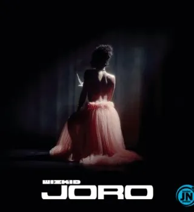
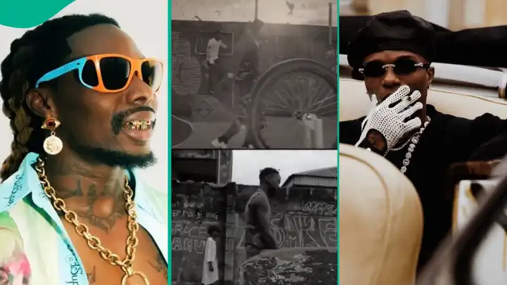

WIZKID

40.000.000 de fans
Biographie
Wizkid, nom de scène de Ayodeji Ibrahim Balogun (né le 16 juillet 1990 à Surulere, dans l'État de Lagos), est un auteur-compositeur-interprète nigérian. Il commence à enregistrer de la musique à l'âge de 11 ans. Il a accédé à la notoriété en 2010 avec la sortie de la chanson Holla at Your Boy suivi de son premier album studio, Superstar en 2011. Son deuxième album studio, Ayo, a été publié en septembre 2014 et a été précédé par six singles.
Top titres
- Piece of My Heart
- Essence
- Mood
- IDK
- Ojuelegba
- Bad To Me
Dernières Sorties
-
 Piece of My Heart
Piece of My Heart - JORO
- MMS
Albums
- More love, Less Ego
- Made In Lagos: Deluxe Edition
- Sounds From The Other Side
Titre le plus écouté
Essence